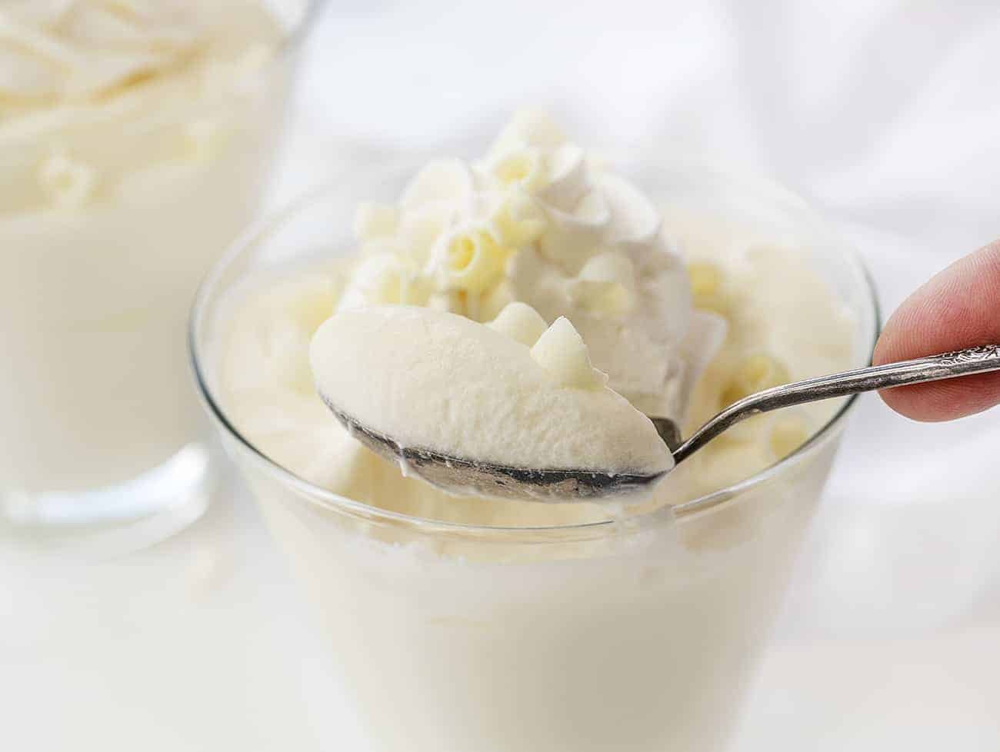

Blancmange

A lighter version of the classic Blancmange, made with buttermilk for a refreshing tangy zing!
Ingredients
- 500ml Buttermilk
- 185g Sugar
- 20ml Vanilla Extract
- 12g Gelatine Leaf
- 500ml Whipping Cream
Method
- Soak gelatine in cold water until soft and pliable. Drain and set aside.
- Warm buttermilk, sugar and vanilla, just until sugar dissolves (about 60°C), strrring continuously. Careful or the buttermilk will curdle!
- Add gelatine and stir until fully dissolved. Set aside to cool.
- Whip the cream to soft peaks and keep refrigerated until needed.
- Keep an eye on the buttermilk. It needs to set enough that it looks like a soft jelly, but not so much that you can't fold the cream through.
If it's too hot, the cream will melt and you will get a firm Blancmange. If it's too cold, it will not blend with the cream and will become lumps of jelly in cream.
Take care!
- When the buttermilk is just setting, fold through the whipped cream, making sure it is evenly dispersed without knocking the air out of it.
- Chill overnight. Serve with fresh fruit or berries.
Back to Recipe Index